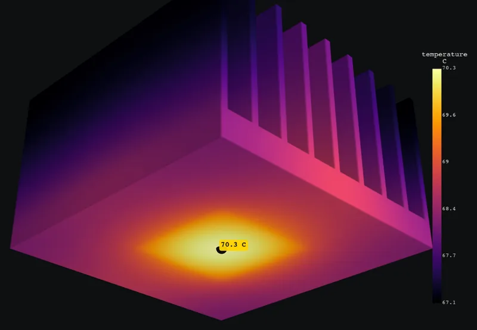
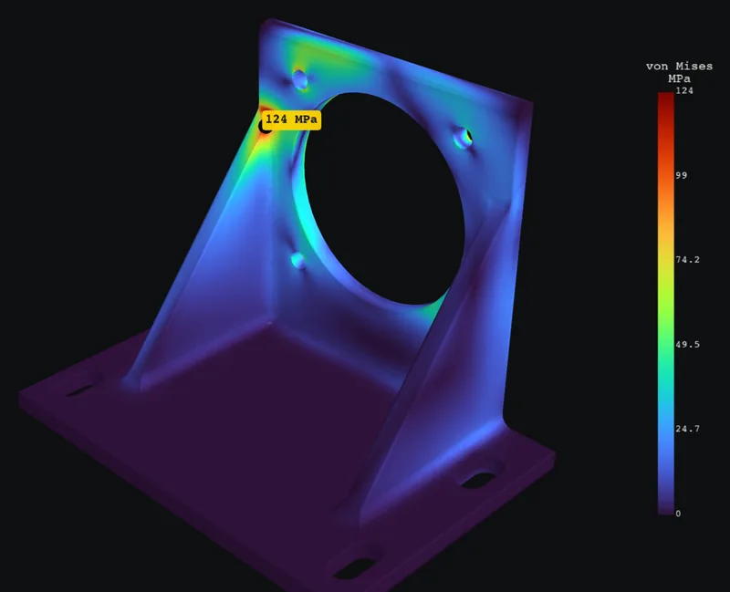
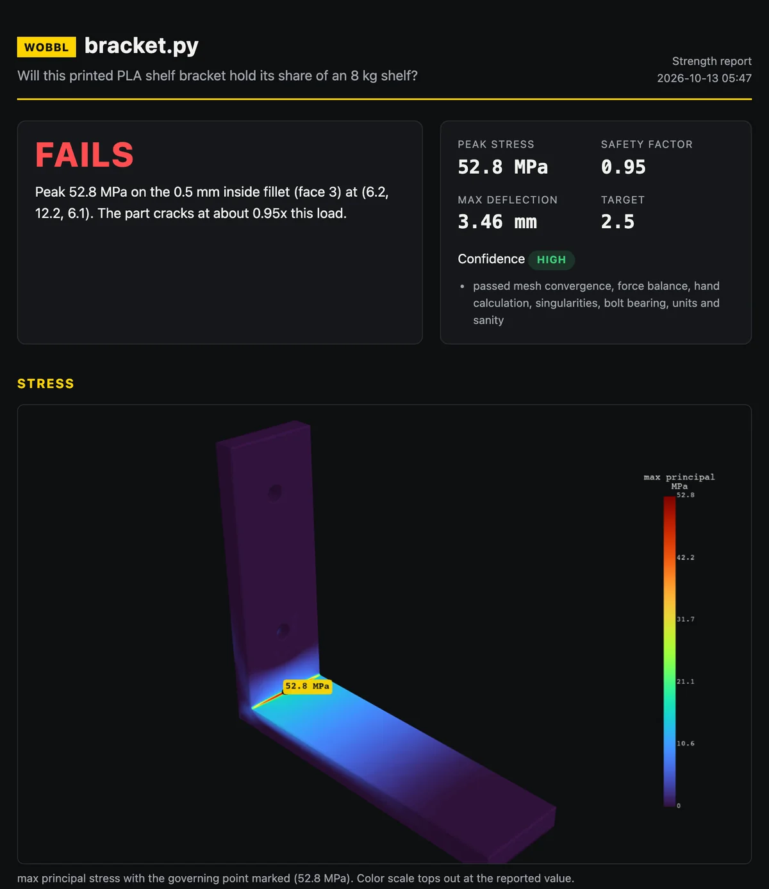
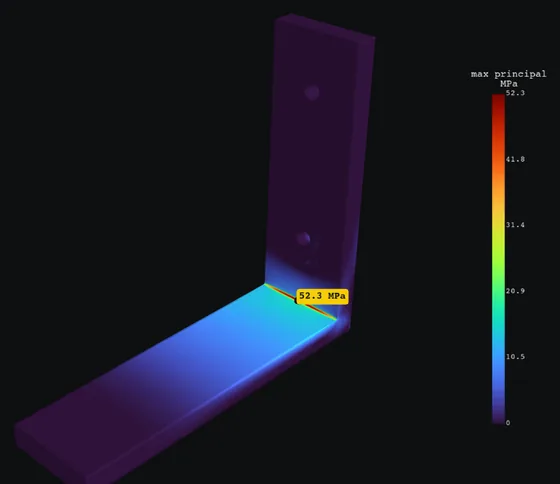
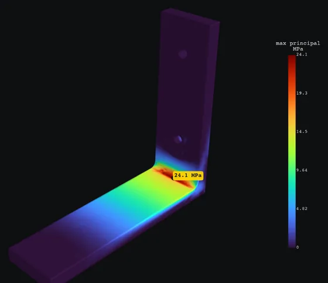
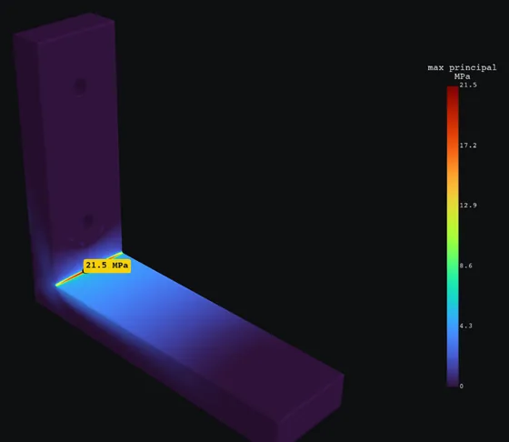
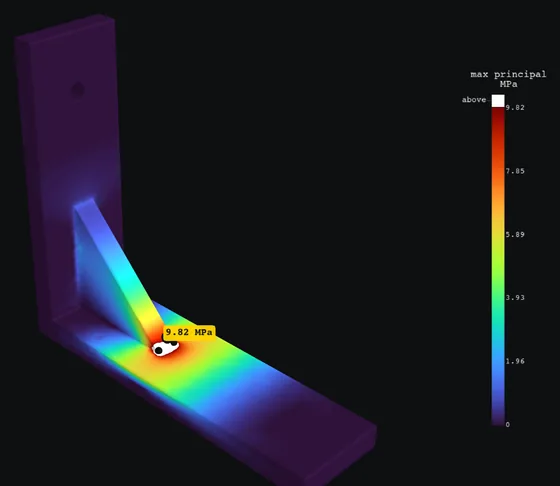
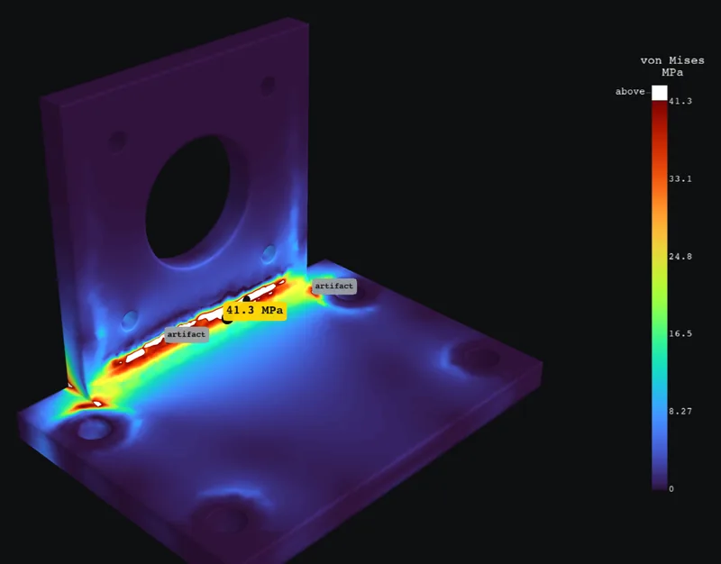
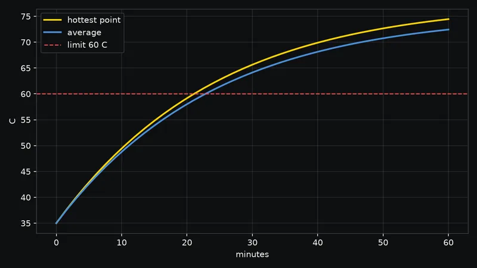
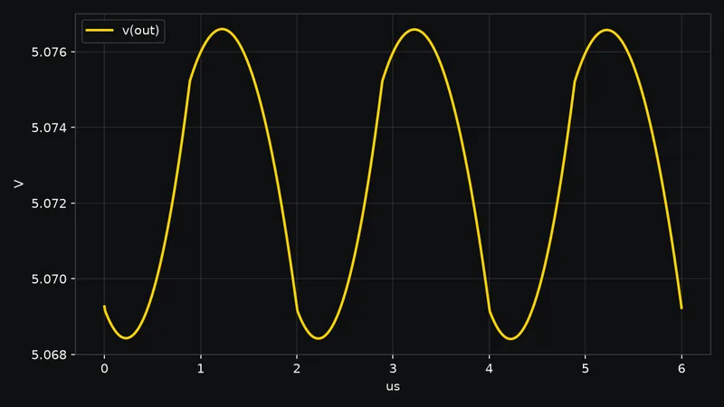

70.3 C
A 15 W chip without a fan
Nine fin 6063 heat sink in a 40 C cabinet. The hottest point stays under the 85 C limit, and the 15 W going in leaves through convection and radiation.
Ask your agent if a part will crack. Wobbl runs a real solver, then checks the answer before you see it.
$ pipx install "git+https://github.com/sohan-bhat/wobbl"$ wobbl setupPlain Claude Code got a CAD file, a strength question and 15 minutes per trial, across 6 parts. In 9 of 10 trials it started writing its own finite element code and ran out of time with nothing to show.
| Part | Reference | Wobbl | Off by | Wobbl’s confidence | Time |
|---|---|---|---|---|---|
| Cast motor mount, 2 kN belt pull through 4 bolts | 124.3 MPa | 123.9 MPa | 0.3% | medium: the verdict flips if the servo is rigid, and it says so | 3.5 min |
| ABS enclosure shell, 250 N near a corner | 93 MPa, 1.93 mm | 89.8 MPa, 1.91 mm | 3.4%, 0.9% | high | 9 min |
| PA12 truss drone arm, 40 N thrust and 0.8 N m | 11.5 MPa, 4.09 mm | 11.53 MPa, 4.08 mm | 0.3%, 0.1% | high | 12 min |
| PLA bracket, 0.5 mm inside corner, wall contact | about 78 MPa | 80.0 MPa | 2.6% | high | 65 s |
| PLA bracket, 6 mm fillet, wall contact | 25.3 MPa | 25.6 MPa | 1.0% | medium: the bonded screw bore reads 64 MPa, excluded and named | 20 s |
| 6061 bar arm with root fillet and hole | 165.1 MPa | 165.0 MPa | 0.1% | high | 1 to 2 min |
The agent knew the physics. Asked for hand calculations only, it landed within 1 to 5% on beam like parts. What it lacked was a fast, reliable way to turn that knowledge into a checked number on a real 3D part, and it kept hitting the same traps: meshers folding thin curved walls, singular peaks at bonded bolts, load idealizations that flip the verdict. Full bake-off
This is the cast mount result Wobbl wrote, exported straight from its result file: 33,462 surface points, each with its stress and displacement. The model is linear elastic, so both scale exactly with the load. Hover or tap the part to read the stress at a point.

Loading the 3D part…
Marginal
Survives the load, but the safety factor is below the target of 2.
Meets the target up to 1,335 N. Yields past 2,670 N.
White is past yield. Hatched zones sit next to the fixed base or where the load enters; Wobbl reports the stress away from them. Treat the servo as a rigid body instead of a bolt group and the peak moves next to a lower bolt hole, where it converges to 55.5 MPa, safety factor 2.97, and the part passes. Wobbl solves both, refines each around its own peak, and marks this answer medium confidence for that reason.
Through the MCP server, your agent inspects the part, picks supports that match the real build, solves, reads the checks before the number and asks for a fix. This is the shelf bracket example, driven through the tools.
Will this printed PLA shelf bracket hold its share of an 8 kg shelf?
inspect_geometry("bracket.py")
solve_structural(path="bracket.py", material="pla", fixtures=["bolt holes d=4.5", "wall x=min"], loads=["40 N down @ top and within 12 of 65,12.5,6"])
verdict fails, 52.8 MPa on the 0.5 mm inside fillet, safety factor 0.95, confidence high
suggest_fix(result_dir, apply=true)
3 mm fillet: 24.5 MPa (2.04); legs at 10 mm: 21.5 MPa (2.32); gusset: 10.3 MPa (4.84)
It cracks at the inside corner: 52.8 MPa against PLA’s 50 MPa. A 3 mm fillet halves the stress; a gusset brings it to 10.3 MPa, safety factor 4.8. The gusset toe is a sharp corner Wobbl excluded as a singularity, so round it too.

wobbl fix --apply edits the part, runs the whole study again for each version and lines up the numbers. Fillets and gussets go into any STEP file through OpenCASCADE, and the edited file is saved for your CAD tool.

52.8 MPaSF 0.95
Fails

24.5 MPaSF 2.04
Marginal

21.5 MPaSF 2.32
Marginal

10.3 MPaSF 4.84
Holds
PLA is judged at 50 MPa with a target safety factor of 2.5 for printed parts. Thicker legs barely help, because the sharp corner still multiplies the stress. Each heatmap is scaled to its own peak.
They set the confidence, high, medium or low, and the reasons are always printed next to it. A result that failed a check is never reported as high confidence.

At least three meshes, refined around the peaks that matter, until the stress moves less than 3%.
44.2 -> 51.1 -> 53.4 -> 52.8 MPa over 4 meshesReactions at the supports must cancel the applied loads to 0.5%.
reactions balance the loads to 0.00011%Beam theory through the critical section gives a nominal stress, and the ratio must be physical.
15.2 MPa nominal, a stress concentration of about 3.5Sharp inside corners come from exact CAD normals. Peaks there are excluded and named with their trend.
14.8, 20.5, 23.1 MPa and still rising: excludedOff part loads are solved both rigid and distributed, each converged at its own peak, and the spread is reported.
rigid servo: 55.5 MPa over 3 meshes, safety factor 2.97At bolted holes, reaction force over projected area replaces the idealized peak.
13.1 N sideways, bearing stress 0.485 MPaPart size, peak strain and deflection have to be plausible for the material.
peak strain 0.015, deflection 2.8% of sizeWhen a part bends a good fraction of its wall, a nonlinear re-solve confirms the linear answer.
runs only when the deflection calls for itHeat answers balance energy and compare with a lumped hand calculation. Circuit answers compare with the textbook and run again at half the time step.

70.3 C
Nine fin 6063 heat sink in a 40 C cabinet. The hottest point stays under the 85 C limit, and the 15 W going in leaves through convection and radiation.
36.9 mA
On 5 V with a 47 ohm resistor, it fries. Wobbl suggests 91 ohm for about 20 mA.

21 min
A 2S2P pack making 6 W in a 35 C box. The lumped model gives a 72.2 C mean at one hour; the FEA gives 72.8 C.

8.56 mV
At 2 A and 500 kHz with ngspice. The ideal formula says 7.95 mV, and the switch and diode drops explain the gap.
wobbl setup registers an MCP server with 13 tools and installs a skill that teaches the workflow and what never to skip. Every config file it touches is backed up first, and wobbl uninstall removes exactly what it added.
MCPclaude mcp add --scope user wobbl
Skill~/.claude/skills/wobbl/SKILL.md
MCP[mcp_servers.wobbl] in ~/.codex/config.toml
Skill~/.codex/skills/wobbl/SKILL.md
MCPmcpServers.wobbl in ~/.cursor/mcp.json
Skill~/.cursor/skills/wobbl/SKILL.md
MCP~/.gemini/extensions/wobbl/
ContextWOBBL.md in the same extension
inspect_geometryholes, fillets, sharp corners, thickness, face idsmesha first second order mesh and its sizenew_studystart a study step by stepset_material22 sourced materials or custom valuesapply_loadforces, pressures, bolts, gravity, remote loadsadd_fixturefixed, bolted, roller or wall supportssolve_structuralthe verified strength studyverifychecks, confidence and excluded peaksrenderheatmap and report pathssuggest_fixfixes with numbers, applied and re-run on requestsolve_thermalsteady or transient heatsolve_circuitLED, RC, buck, MOSFET or any netlistlist_materialsthe materials tableTextbook solutions, NAFEMS LE1 and LE10, and five real parts against converged reference models, all through the same pipeline you get. Run them yourself with wobbl validate, about 7 minutes.
| Case | Expected | Wobbl | Error | Confidence |
|---|---|---|---|---|
| Textbook and benchmark strength | ||||
| Cantilever tip deflection, Timoshenko | 0.8016 mm | 0.7957 mm | 0.73% | high |
| Cantilever stress at mid span, M c / I | 30 MPa | 30.06 MPa | 0.19% | high |
| Plate with a hole, Kirsch with Peterson | 30.35 MPa | 29.86 MPa | 1.62% | high |
| Thick walled pressure vessel, Lame | 231.3 MPa | 231.9 MPa | 0.27% | high |
| NAFEMS LE1 elliptic membrane | 92.7 MPa | 92.96 MPa | 0.28% | high |
| NAFEMS LE10 thick plate | -5.38 MPa | -5.413 MPa | 0.62% | medium |
| Round shaft in torsion | 55.13 MPa | 55.64 MPa | 0.92% | high |
| Cantilever under its own weight | 1.443 mm | 1.441 mm | 0.16% | high |
| Real parts against converged reference models | ||||
| Cast motor mount, belt pull through 4 bolts | 124.3 MPa | 123.9 MPa | 0.31% | medium |
| ABS enclosure shell pressed near a corner | 93 MPa | 89.83 MPa | 3.40% | high |
| PA12 truss drone arm at full thrust | 11.5 MPa | 11.53 MPa | 0.25% | high |
| PLA shelf bracket, 0.5 mm inside corner | 78 MPa | 79.99 MPa | 2.55% | high |
| PLA shelf bracket, 6 mm fillet | 25.3 MPa | 25.56 MPa | 1.03% | medium |
| Heat | ||||
| Slab conduction into convection | 97.67 C | 97.67 C | 0.00% | high |
| Aluminum cube cooling in air, lumped | 58.01 C | 58.27 C | 0.44% | high |
| Circuits | ||||
| Red LED on 5 V through 150 ohm | 20 mA | 20 mA | 0.00% | high |
| RC charging at one time constant | 3.161 V | 3.161 V | 0.00% | high |
| Buck converter output ripple | 7.949 mV | 8.561 mV | 7.70% | high |
Medium confidence is Wobbl naming what the number leans on, not a miss. The buck converter’s reference is the ideal waveform, which ignores the switch and diode drops ngspice models, so it gets a wider tolerance. All 18 cases and their setups
It tells you whether yield is reached, not what happens after. Large deflection is checked with a nonlinear re-solve.
Fatigue, impact and vibration are not modeled yet.
A part can push on a wall and lift off it. Bolted joints are clamped holes, without preload.
Assemblies of touching bodies are bonded together.
2 to 3 mm shells on 100 mm parts need large tetrahedral meshes and take several minutes. Shell elements are next.
Isotropic at 100% infill, with a layer strength knockdown when you give the print direction.
Next up: shell elements, fatigue estimates and bolt preload in 0.2, CFD with OpenFOAM in 0.3, motion with MuJoCo in 0.4.
Python 3.10 or newer. It installs from GitHub until it is on PyPI.
$ pipx install "git+https://github.com/sohan-bhat/wobbl"# or: uv tool install "git+https://github.com/sohan-bhat/wobbl"CalculiX and ngspice from conda-forge into ~/.wobbl, about 340 MB, no admin rights. Then the MCP server and skill for every agent it finds.
$ wobbl setupSolvers, rendering and each agent’s registration.
$ wobbl doctorInspect first to see the holes, fillets and face ids, then ask in plain words or with explicit loads and supports.
$ wobbl inspect part.step$ wobbl part.step "will this 6061 bracket yield under 50 lbf at the tip?"| Platform | CalculiX | ngspice |
|---|---|---|
| macOS Apple Silicon | native | Intel build under Rosetta 2 |
| macOS Intel | native | native |
| Linux x86_64 | native | native |
| Linux arm64 | native | from your package manager; Wobbl finds it |
| Windows x64 | native | native |